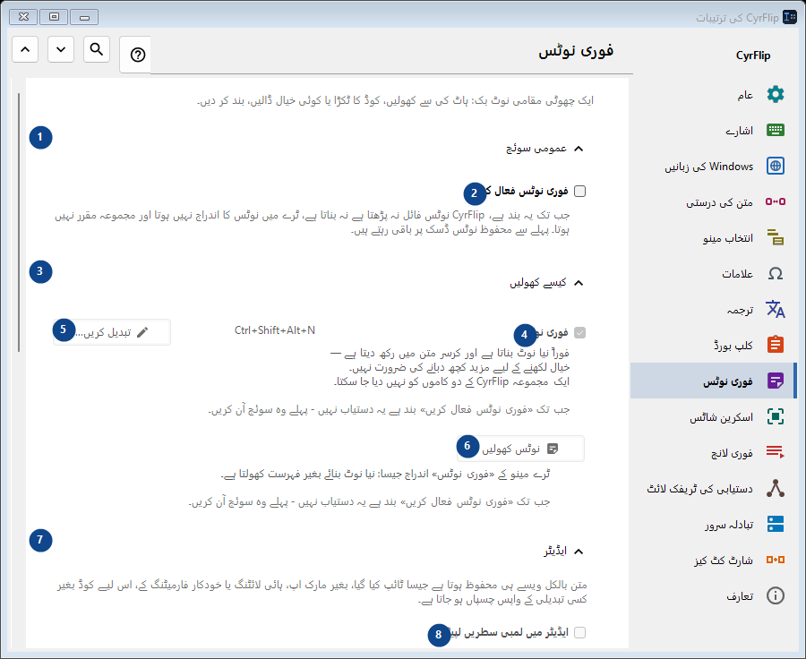
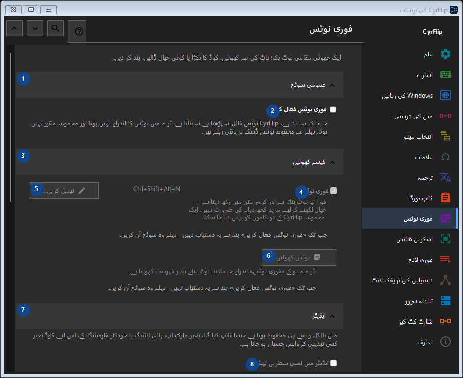

فوری نوٹس
مقصد
ایک چھوٹی مقامی نوٹ بک: ہاٹ کی سے کھولیں، کوڈ کا ٹکڑا یا کوئی خیال ڈالیں، بند کر دیں۔


استعمال کی ترتیب
ترتیبات فوراً لاگو ہوتی ہیں۔ کوئی لازمی ترتیب نہیں؛ نیچے کے گروپ استعمال کریں۔
عناصر
1. عمومی سوئچ
درج شدہ کارروائی کے لیے یہ حکم استعمال کریں۔ قبول کرنے سے پہلے تصدیق پڑھیں۔
آپ کے شارٹ کٹ2. فوری نوٹس فعال کریں
جب تک یہ بند ہے، CyrFlip نوٹس فائل نہ پڑھتا ہے نہ بناتا ہے، ٹرے میں نوٹس کا اندراج نہیں ہوتا اور مجموعہ مقرر نہیں ہوتا۔ پہلے سے محفوظ نوٹس ڈسک پر باقی رہتے ہیں۔
آپ کے شارٹ کٹ3. کیسے کھولیں
درج شدہ کارروائی کے لیے یہ حکم استعمال کریں۔ قبول کرنے سے پہلے تصدیق پڑھیں۔
آپ کے شارٹ کٹ4. فوری نوٹس
جب تک «فوری نوٹس فعال کریں» بند ہے یہ دستیاب نہیں - پہلے وہ سوئچ آن کریں۔ یہ عنصر ابھی دستیاب نہیں۔ پہلے خصوصیت فعال کریں یا اندراج منتخب کریں۔
آپ کے شارٹ کٹ5. تبدیل کریں - فوری نوٹس
جب تک «فوری نوٹس فعال کریں» بند ہے یہ دستیاب نہیں - پہلے وہ سوئچ آن کریں۔ یہ عنصر ابھی دستیاب نہیں۔ پہلے خصوصیت فعال کریں یا اندراج منتخب کریں۔
آپ کے شارٹ کٹ6. نوٹس کھولیں
جب تک «فوری نوٹس فعال کریں» بند ہے یہ دستیاب نہیں - پہلے وہ سوئچ آن کریں۔ یہ عنصر ابھی دستیاب نہیں۔ پہلے خصوصیت فعال کریں یا اندراج منتخب کریں۔
آپ کے شارٹ کٹ7. ایڈیٹر
درج شدہ کارروائی کے لیے یہ حکم استعمال کریں۔ قبول کرنے سے پہلے تصدیق پڑھیں۔
آپ کے شارٹ کٹ8. ایڈیٹر میں لمبی سطریں لپیٹیں
جب تک «فوری نوٹس فعال کریں» بند ہے یہ دستیاب نہیں - پہلے وہ سوئچ آن کریں۔ یہ عنصر ابھی دستیاب نہیں۔ پہلے خصوصیت فعال کریں یا اندراج منتخب کریں۔
آپ کے شارٹ کٹ9. برآمد اور ذخیرہ
درج شدہ کارروائی کے لیے یہ حکم استعمال کریں۔ قبول کرنے سے پہلے تصدیق پڑھیں۔
آپ کے شارٹ کٹ10. برآمد کرتے وقت تاریخیں شامل کریں
جب تک «فوری نوٹس فعال کریں» بند ہے یہ دستیاب نہیں - پہلے وہ سوئچ آن کریں۔ یہ عنصر ابھی دستیاب نہیں۔ پہلے خصوصیت فعال کریں یا اندراج منتخب کریں۔
آپ کے شارٹ کٹ11. تمام نوٹس Markdown میں برآمد کریں...
جب تک «فوری نوٹس فعال کریں» بند ہے یہ دستیاب نہیں - پہلے وہ سوئچ آن کریں۔ یہ عنصر ابھی دستیاب نہیں۔ پہلے خصوصیت فعال کریں یا اندراج منتخب کریں۔
آپ کے شارٹ کٹ12. تمام فوری نوٹس حذف کریں
جب تک «فوری نوٹس فعال کریں» بند ہے یہ دستیاب نہیں - پہلے وہ سوئچ آن کریں۔ یہ عنصر ابھی دستیاب نہیں۔ پہلے خصوصیت فعال کریں یا اندراج منتخب کریں۔
آپ کے شارٹ کٹ13. دوسرے کمپیوٹر پر منتقلی
درج شدہ کارروائی کے لیے یہ حکم استعمال کریں۔ قبول کرنے سے پہلے تصدیق پڑھیں۔
آپ کے شارٹ کٹ14. ایکسپورٹ کریں...
آپ کے نوٹس اور منتخب کلپ بورڈ ہسٹری والی ایک کھلی ٹیکسٹ فائل: اسے کسی بھی ایڈیٹر یا فون پر پڑھا جا سکتا ہے اور دوسرے کمپیوٹر پر CyrFlip میں امپورٹ کیا جا سکتا ہے۔ فائل خفیہ نہیں کی جاتی۔ امپورٹ دکھاتا ہے کہ کیا شامل ہوگا اور کچھ حذف نہیں کرتا۔
آپ کے شارٹ کٹ15. امپورٹ کریں...
درج شدہ کارروائی کے لیے یہ حکم استعمال کریں۔ قبول کرنے سے پہلے تصدیق پڑھیں۔
آپ کے شارٹ کٹ